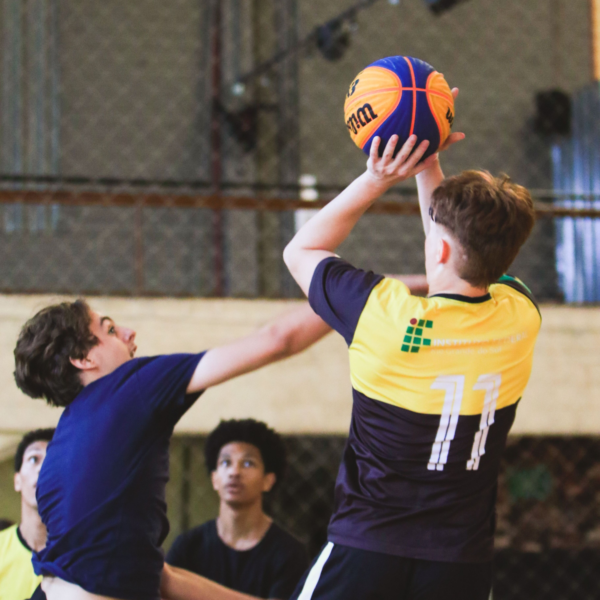
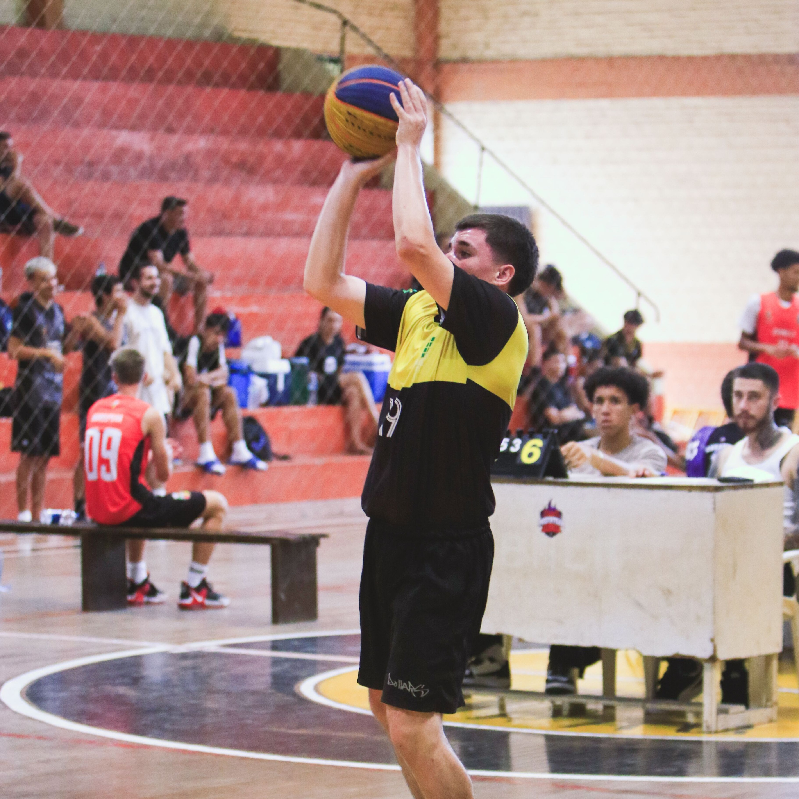
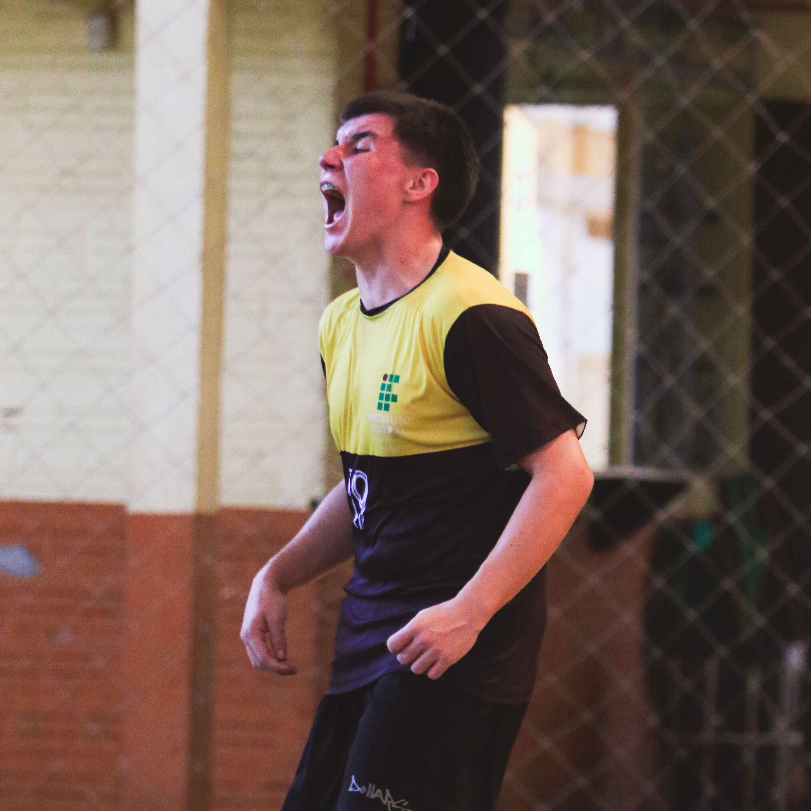
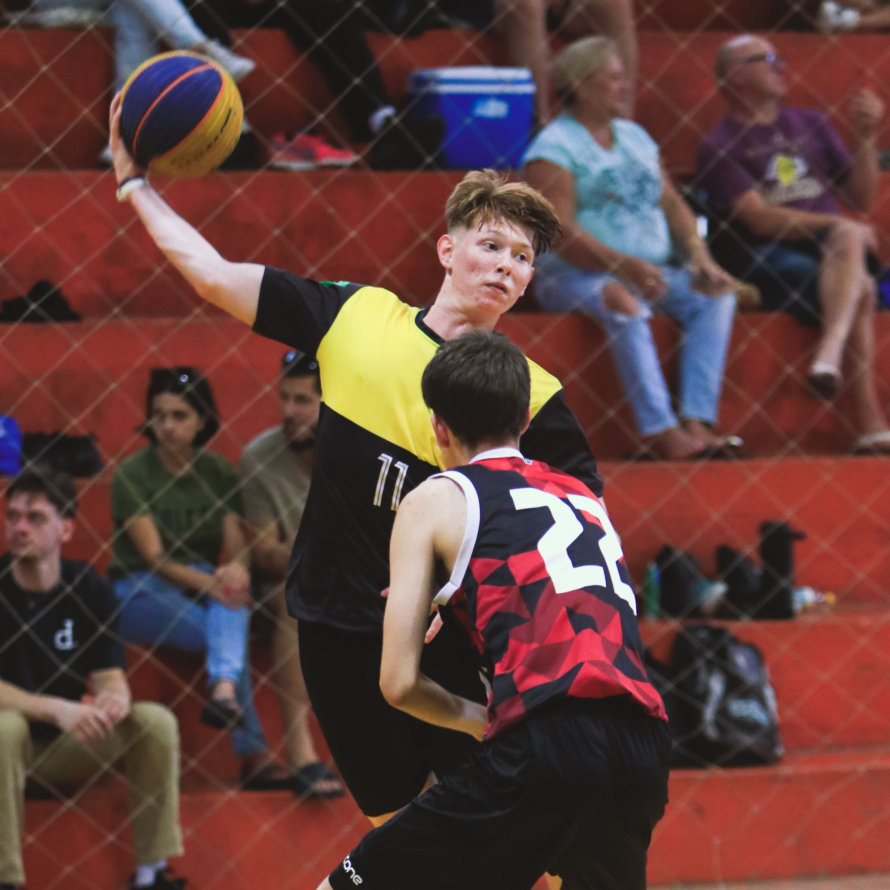

O IFRS Feliz Basketball é um grupo de amigos, estudantes do IF, que se uniram pela paixão ao basquete, e, com ajuda do Instituto Federal de Educação e Tecnologia, e a professora Vivian Giesel, representam o IFRS Campus Feliz em competiçoes de basquete pelo Vale do Caí e redondezas.
 O time participa de diversas competições no Vale do Caí, porém, apenas competições de 3x3 até o momento, devido ao elenco reduzido de apenas 3 atletas. Alguns dos campeonatos que já participamos foram, a Liga PREFA 3x3 e o Torneio 3x3 Sesc Montenegro.
Nosso objetivo como equipe e projeto e incentivar os estudantes do IF, e de outras escolas, a competir em algum nível, não só no basquete como em qualquer outro esporte. Acreditamos que a competição é muito importante para nossa formação como pessoa, e por isso ele não precisa, nem deve, se restringir aos jogos escolares.
 